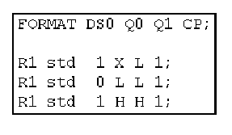

ASCII Vector File
The state characters defined in the ASCII timing file are used in ASCII vector files. Every ASCII vector file contains the vectors of one pattern (label). The files are arranged in a tabular format. The columns correspond to pins, and the rows to vectors (similar to the layout of the pattern debug tool); accordingly, the rows are called ASCII vectors. Every table cell contains one state character. The following figure shows an example of an ASCII vector file:

Notice the following points in the figure:
- The first two columns do not belong to the vector table, but are a kind of header to the ASCII vectors. The first column (Rx) specifies the repeat factor of the vector (that is, how often it is to be sent to the DUT), the second the ASCII device cycle according to which the state characters are to be interpreted. In the example, all three ASCII vectors have the same repeat factor, namely 1, and the same ASCII device cycle, namely std.
- The order of the pins is specified in the FORMAT statement. Thus, the state characters for the pin Q0 are in the second state character (fourth overall) column.